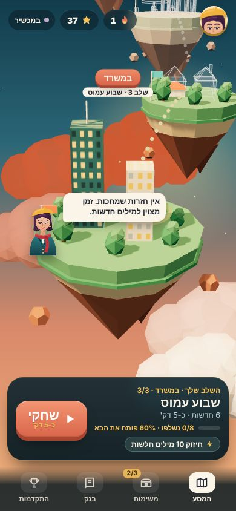
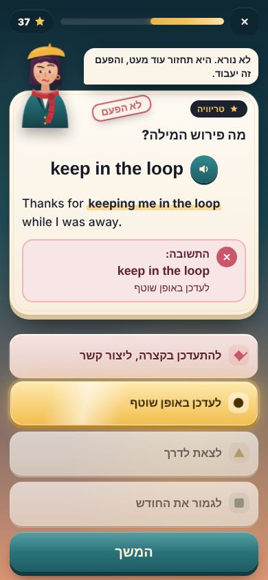
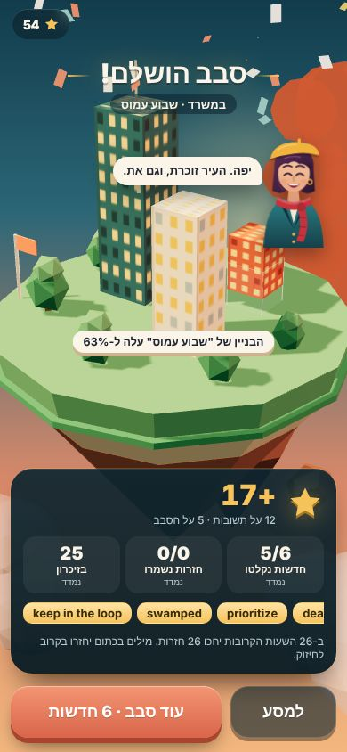
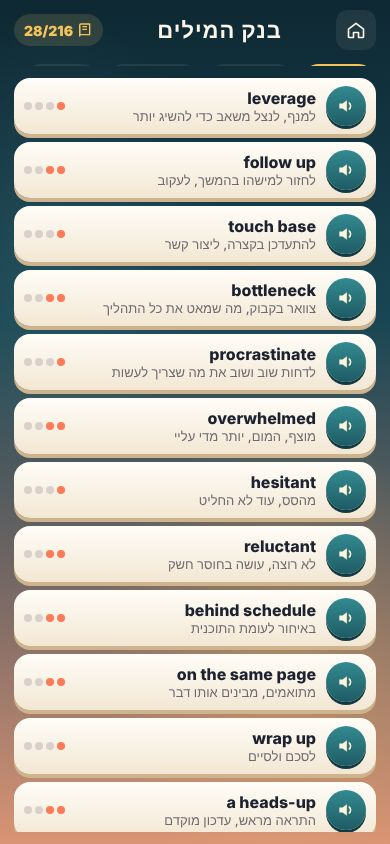

אבחון ביקורתי של M4, העקרונות שמאחורי הרפרנסים, ושני כיוונים חדשים. בכל כיוון מוצגים אותם שלושה מסכים עם אותה מילה ואותו תוכן. המסכים הם הדגמה אינטראקטיבית: אפשר לגרור את המסע, לענות על השאלה ולהפעיל שוב את מסך הסיום. הם לא מחוברים למנוע האמיתי, וגרסת M4 בקישור הראשי לא השתנתה.




מה נשאר מ-M4: העיקרון "הזיכרון בונה את העולם", האנימציה של מבנה שגדל בסיום, "אנימציות מופחתות", והמשוב הכפול לנכון ולשגוי. אלה עובדים, ושני הכיוונים בונים עליהם.
המסע הוא נוף פנורמי אחד שעוברים בו מימין לשמאל, כמו בקריאה בעברית. כל פרק הוא עמק עם שעה משלו ביום: המשרד בשעת זהב, הבית בבוקר, משא ומתן בערב ורוד, סדרות בלילה, טיולים בזריחה. פרק שעוד לא נפתח מופיע כקו מתאר בהיר באופק. ככל שהזיכרון מתחזק, נדלקים חלונות ונבנים מבנים. מרגו הולכת בתוך הנוף, צעד על כל שאלה. היא חלק מהעולם, לא שכבה מעליו.
כל פרק הוא שדה צבע אחד מלא: כתום למשרד, מרווה לבית, לילך למשא ומתן, ורוד לסדרות, תכלת לטיולים. במרכז יש דיורמה קטנה מחומר רך, ומרגו עשויה מאותו "חימר" ועומדת בתוכה. הממשק כמעט שחור-לבן: טיפוגרפיה ענקית, כפתורים שחורים ומעט אלמנטים. במסך השאלה הצבע עולה למעלה, והאריחים הלבנים יושבים על בסיס ניטרלי ונוח לעין.
| רמה | משך | עקומה | שימוש |
|---|---|---|---|
| מגע | 120ms | cubic-bezier(.2,.7,.2,1) | לחיצה על אריח או כפתור, מצב לחוץ |
| משוב | 220-350ms | אותה עקומה, בלי קפיצה | נכון או שגוי, קו מחיקה, סימן וי שנמתח |
| מעבר | 420ms | יציאה מהירה, כניסה רכה | מעבר בין שאלות, פתיחת גיליון |
| רגע | 900-1400ms | cubic-bezier(.3,1.3,.4,1), רק כאן | סיום שלב, פתיחת עולם, בניין שעולה. אפשר לדלג בנגיעה |
| אווירה | אינסופי, איטי מאוד | לינארית | עננים, אור ונשימה של מרגו. נעצרת במצב "אנימציות מופחתות" וכשהמסך לא פעיל |
כלל אחד: תנועה מספרת מה קרה, ולא ממלאת מסך. במצב "אנימציות מופחתות" כל המעברים הופכים להחלפה רכה של 150ms, ורגעי השיא מוצגים במצב הסופי שלהם.
נכסים ורישוי: אין נכסים חיצוניים. הגופנים מ-Google Fonts ברישיון OFL, בחינם. כיוון 2 משתמש ב-three.js ברישיון MIT, בחינם. עלות נוספת: 0.
מה אני צריכה ממך: לבחור כיוון: 1, 2, או 1 עם השלד של מרגו. אחרי הבחירה אבנה את שלושת המסכים בקישור הבדיקה, מחוברים למנוע האמיתי, בלי לגעת בגרסה הראשית.